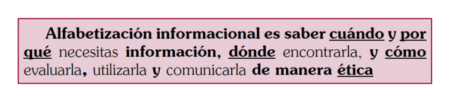
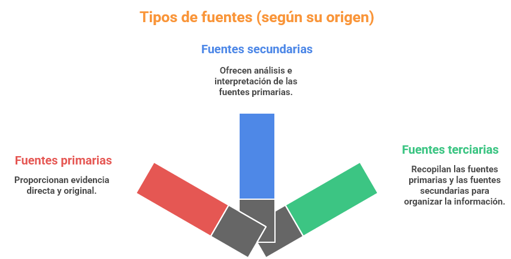
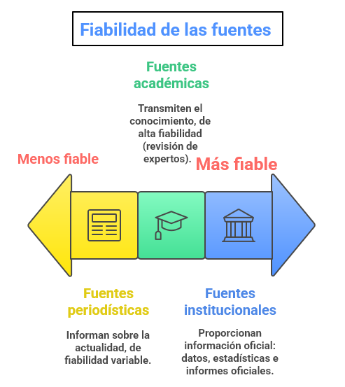
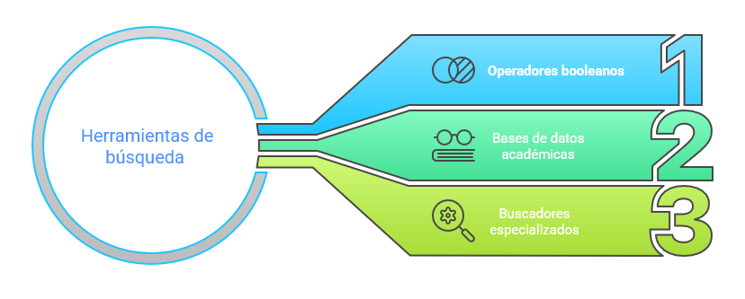

1. Búsqueda de información
En la sección anterior de esta situación de aprendizaje, 3. Mini reto: buscar argumentos, habéis explorado una técnica sencilla (tormenta de ideas) de búsqueda de argumentos, puesto que nos limitamos a, en equipo, compartir argumentos, una vez decidida la toma de postura en relación con la pregunta planteada ¿Cree que la actual situación económica y social de España es precaria? Pero la única fuente de esos argumentos eran vuestros conocimientos previos sobre la situación económica y social española en la actualidad.
Sin embargo, en otras muchas ocasiones (caso del debate académico), tendrás la oportunidad de realizar una búsqueda de información en fuentes externas, que permitirá fijar o adoptar una postura sobre el tema del debate, así como, lógicamente, construir argumentos de apoyo para defender esa toma de postura. Por consiguiente, sin renunciar, lógicamente, a los conocimientos previos, que siempre serán una potente fuente de información, es necesario conocer procedimientos y estrategias que garanticen que esa búsqueda de información en fuentes externas permita acceder a información fiable y veraz.
Ahora desarrollarás habilidades cruciales. No solo aprenderás a encontrar información, sino a cuestionarla, a entender quién la produce y con qué intención, y a utilizarla de forma responsable. Esto será fundamental tanto para la construcción de argumentos sólidos en el debate, como para la elaboración de textos expositivos claros y bien fundamentados. A esa habilidad o competencia de acceso, discriminación y comunicación ética de la información se la denomina alfabetización informacional.
{kind=link}

En esta sección el objetivo es pasar de “tener ideas” a “fundamentarlas” con fuentes externas fiables, aprendiendo a buscar mejor, a leer lateralmente con SIFT y a decidir con un test de calidad sencillo llamado CRAAP, de modo que el equipo construya una base sólida de evidencias para sus argumentos. Al terminar, cada equipo habrá reunido y justificado un pequeño dosier de fuentes útiles que podrá integrar en su estrategia y en la redacción de párrafos expositivos con datos.
Dónde buscamos
Imagina que eres un detective y la información son tus pistas. No todas las pistas tienen el mismo valor ni te llevan al mismo lugar. Algunas son testimonios directos, otras son resúmenes de lo que otros han dicho. En el mundo de la investigación, ocurre algo parecido. Vamos a clasificar las fuentes para saber qué tipo de "pista" estamos siguiendo:
{kind=link}

- Fuentes primarias. Son la evidencia directa, la materia prima de la investigación. Piensa en ellas como el testimonio de un testigo presencial en un juicio. Incluyen discursos originales, entrevistas, cartas, diarios, resultados de experimentos científicos publicados por los propios investigadores, obras de arte originales, etc. Si analizas un discurso de un político, el texto de ese discurso es una fuente primaria. Un ejemplo próximo de fuente primaria es el Glosario de términos gramaticales (GTG) que hemos consultado en varias situaciones de aprendizaje anteriores.
- Fuentes secundarias. Estas fuentes analizan, interpretan o comentan las fuentes primarias. Son como el análisis que un experto hace sobre el testimonio del testigo. Fuentes secundarias son las biografías, los libros de historia, los artículos de investigación que revisan trabajos de otros, los documentales, etc. Un artículo de periódico que analiza el discurso del político sería una fuente secundaria. Como fuente de secundaria gramatical, podemos citar esta lista de reproducción de vídeos explicativos sobre oración compuesta del canal de Youtube La coma criminal. Alguno de estos vídeos se han trabajado en situaciones de aprendizaje gramaticales.
- Fuentes terciarias. Su función es recopilar y organizar fuentes primarias y secundarias. Son puertas de entrada a la información. Por ejemplo, las enciclopedias (como la Wikipedia), los diccionarios, los repertorios bibliográficos, las bibliografías especializadas o manuales. Un ejemplo de fuente terciaria es la MLA International Bibliography, una base de datos bibliográfica sobre lenguas, literatura y lingüística, con cobertura internacional desde 1920 hasta hoy.
Además, según quién las produce y con qué fin, podemos distinguir entre:

- Fuentes académicas. Son producidas por expertos e investigadores de universidades o centros de investigación. Suelen ser muy fiables porque han pasado por un proceso de revisión por otros expertos (revisión por pares). Su objetivo es avanzar en el conocimiento. Las encontrarás en revistas científicas, libros especializados o bases de datos como Dialnet o Google Scholar.
- Fuentes periodísticas. Provienen de medios de comunicación (periódicos, radios, televisiones, etc.). Su objetivo es informar sobre la actualidad. Su fiabilidad puede variar mucho: no es lo mismo un reportaje de investigación de un periódico de prestigio que una noticia sin contrastar de un blog desconocido.
- Fuentes institucionales. Son publicadas por organismos gubernamentales (ministerios, ayuntamientos), organizaciones internacionales (ONU, OMS) o ONGs. Suelen ofrecer datos, estadísticas e informes oficiales muy fiables sobre sus áreas de competencia.
Para nuestro debate, una combinación inteligente de estas fuentes será la clave del éxito. Para construir argumentos sólidos conviene priorizar publicaciones revisadas por pares —artículos académicos, libros y capítulos— y documentos institucionales de organismos públicos o entidades reconocidas, porque cuentan con procesos de revisión y estándares de calidad que aumentan su credibilidad y utilidad para el debate. Las fuentes no académicas —como prensa de calidad o informes sectoriales— pueden aportar contexto y actualización, pero deben contrastarse con otras y verificarse antes de incorporarlas como evidencia principal.
Herramientas de búsqueda
{kind=link}

No basta con saber qué tipo de fuentes existen; también hay que saber cómo encontrarlas. Google es un buen punto de partida, pero para un debate académico, necesitamos ir más allá. Se describen a continuación algunas herramientas y trucos para buscar como un profesional:
- Operadores booleanos. Son palabras clave que te permiten refinar tus búsquedas. Imagina que son filtros para encontrar exactamente lo que necesitas:
- AND. Para buscar documentos que contengan todas las palabras clave. Ejemplo: cambio climático AND economía. Esto te dará resultados que hablen tanto de cambio climático como de economía.
- OR. Para buscar documentos que contengan al menos una de las palabras clave. Ejemplo: energía solar OR energía eólica. Útil si quieres resultados sobre cualquiera de las dos.
- NOT (o —). Para excluir palabras clave. Ejemplo: inteligencia artificial NOT robótica. Si te interesa la IA, pero no quieres que aparezcan resultados de robótica.
- Comillas “”. Para buscar una frase exacta. Ejemplo: “desarrollo sostenible”. Esto te asegura que las palabras aparezcan juntas y en ese orden.
- Paréntesis (). Para agrupar términos y combinar operadores. Ejemplo: (contaminación OR polución) AND (agua OR ríos). Así buscas documentos sobre contaminación o polución, y que además hablen de agua o ríos.
- Bases de datos académicas y buscadores especializados. Aquí es donde encontrarás las fuentes académicas más fiables. Son como bibliotecas gigantes especializadas:
- Google Scholar (Google académico). Un buscador de Google centrado en literatura académica. Puedes encontrar artículos, tesis, libros, resúmenes, etc. Es muy útil para empezar y ver qué se ha publicado sobre un tema.
- Dialnet. Una de las mayores bases de datos de literatura científica hispana. Ideal si buscas artículos, revistas o tesis en español.
- Bases de datos específicas. Dependiendo del tema, existen bases de datos especializadas (ej. PubMed para medicina, JSTOR para humanidades, ÍnDICEs CSIC para los artículos publicados en revistas científicas españolas). Tu profesor/a te puede orientar sobre cuáles son las más relevantes para vuestro tema de debate.
Recuerda: la clave no es solo encontrar mucha información, sino encontrar la mejor información. Y para eso, estas herramientas son tus mejores aliadas.
{kind=link}
{kind=link}
{kind=link}